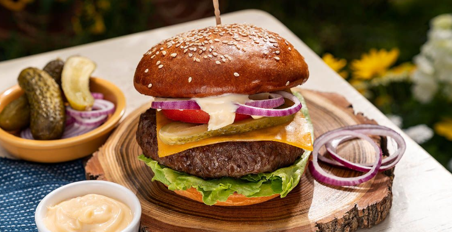

Hamburger patří mezi nejoblíbenější jídla na světě. Jeho základem je šťavnaté maso vložené
do rozkrojené housky, které se doplňuje sýrem, zeleninou a omáčkou. Každý si ho může upravit
podle své chuti – od jednoduché klasiky až po bohatě obloženou specialitu.
Jeho obliba spočívá v kombinaci měkké housky, výrazného masa a čerstvých surovin. Příprava
je snadná a nabízí spoustu možností, jak jednotlivé ingredience obměnit. Hamburger se proto
hodí na rychlý oběd, večeři s přáteli i grilování.